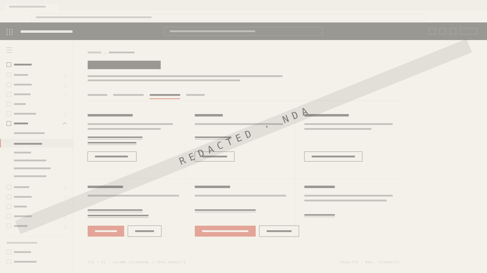
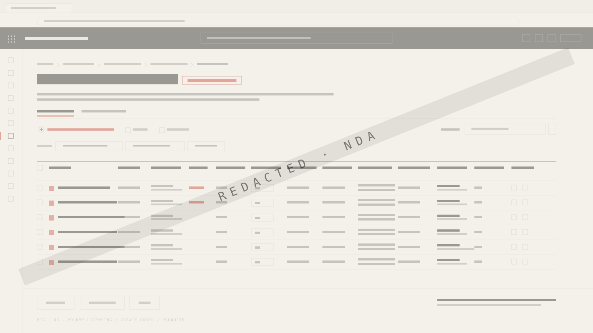
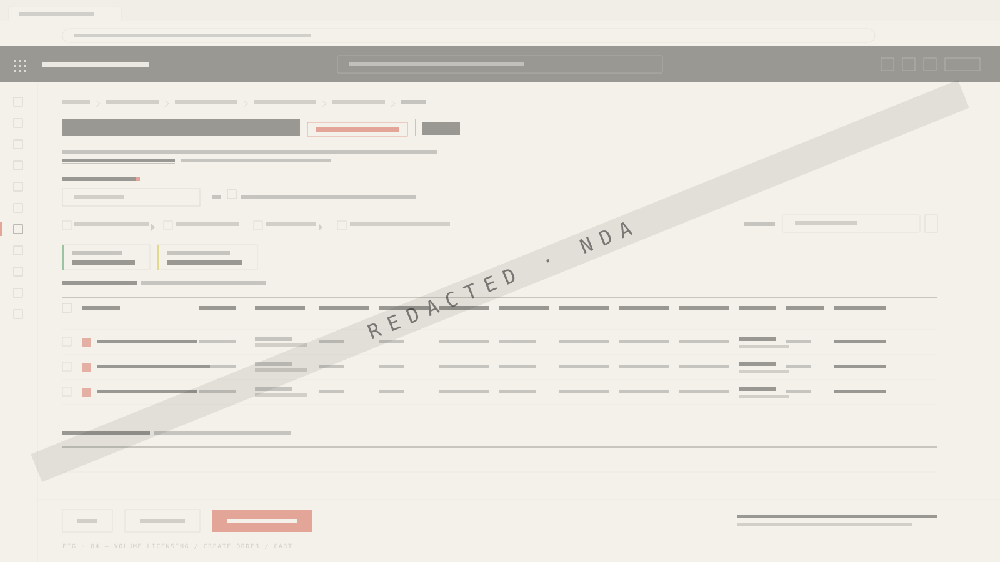

How I took enterprise ordering from a manual, ops-heavy workflow to a trusted self-serve experience — through structured discovery, cognitive walkthroughs, iterative prototyping, and continuous user validation. The brief said speed. The work made it about trust.



Before I could design anything, I had to understand what ordering means in enterprise commerce. Not an e-commerce cart — a high-stakes system where pricing must be enrolment-accurate, eligibility rules enforced, compliance paths preserved. A single mistake creates downstream instability across billing, provisioning, and audit.
The existing workflow was manual and fragmented. Partners called operations teams. Operations teams keyed orders into legacy tools. Customers had zero visibility into what was happening. The organisation needed a self-serve path — but one that preserved every constraint the manual process enforced.
Manual, ops-dependent. Phone and email orders. No pricing visibility. Cycle in days.
Self-serve with trust built in. Upfront eligibility. Auditable quotes. Cycle in minutes.
This wasn't a linear double diamond. Enterprise design at this scale requires constant negotiation between what's ideal, what's feasible, and what's safe. Here's how I structured the work.
Mapped current-state workflows across Partner, OSC/ROC, and Customer personas. Surfaced 12 distinct order types with unique compliance requirements. Interviewed operations staff to surface tacit knowledge not in any spec.
Reframed the problem from "how do we speed up ordering?" to "how do we give users enough confidence to act independently?" Established four design principles that became the contract for every downstream call.
Designed the full E2E flow: eligibility → pricing → quote → PO → submission → management. Surfaced eligibility and pricing upfront, before commitment — the single decision behind the ~60% time reduction.
Six partner sessions across two rounds, plus dedicated ROC/OSC walkthroughs. Measured hesitation, confidence, and second-guessing — not just success. Found that the term "contract" caused confusion; partners used "enrolment" in their model.
Reworked contract selection inline. Redesigned the cart as a trust verification surface, not a passive summary. Replaced "contract" with "enrolment" across the flow. Added proactive order management with draft notices and contract-level grouping.
Owned fit-and-finish through bug-bash, UAT walkthroughs, and accessibility validation. Blocked three trust-breaking issues engineering had marked low-priority. Delivered Grade-C accessibility. ~80% adoption inside 30 days.
Self-serve in enterprise is not a speed problem. It is a trust problem. Users will not self-serve if they cannot verify outcomes before committing.
Three findings from cogwalks, the design responses they triggered, and the measurable outcomes they unlocked at GA.
Decision: Surface compliance status, anniversary dates, and coverage windows directly in the selection table. Outcome: ~60% faster ordering across channels.
Decision: Downloadable quote preview as an auditable trust artefact — not an intermediate step. Outcome: ~80% adoption within 30 days; quote downloads became the most-used feature.
Decision: Multi-PO as a first-class flow — up to 50 orders at once. Outcome: ~70% agility boost for high-volume partners; called out as a "game changer" in round 2.
"Contract" terminology confused partners. Cart was a passive summary. Eligibility hidden until submission error. Errors described problems, didn't guide action.
"Enrolment" matched mental model. Cart redesigned as trust surface. Compliance visible inline. Errors prescriptive — told users what to do next.
I deprioritised advanced filtering in Phase 1 to invest in quote preview and pricing transparency. Partners could manage without filters; they couldn't self-serve without pricing confidence.
Senior design isn't just about making the right calls — it's about getting others to trust and act on them. Four moments where influence shaped outcomes.
Eng pushed back on surfacing compliance before commitment — extra API calls, loading states. I showed them the downstream cost: every post-submission error triggered a ticket, an ops intervention, and trust loss. The upfront check was cheaper than the recovery path.
When a new feature conflicted with the "prevent, don't recover" principle, I didn't block it — I reframed the ask through the principles we'd already agreed on. The principles became the neutral ground.
A 45-minute working session aligned PM, Eng, and Ops on next-sprint scope. Every time the conversation drifted, I pulled it back to the partner's experience. We left with a shared decision, not a compromise.
Built the before/after narrative for LT and exec demos. Positioned self-serve as a scale enabler — reduced ops cost, faster cycles, legacy retirement. The acclaim wasn't accidental. It was a design decision about how to frame the work.
Users consistently chose slower paths when they felt more confident about the outcome. "Review and download quote" added time — but partners used it on nearly every order. Removing it would have been faster, less trusted.
Changing "contract" to "enrolment" didn't just fix confusion — it changed how partners navigated the flow. Terminology that matched their mental model reduced hesitation at every step. Content design was as impactful as interaction design.
Surfacing eligibility upfront didn't just prevent mistakes. It changed the user's posture from cautious to confident. When users know they can't make certain errors, they move faster and engage more deeply with the features that matter.
My first cart was a passive summary screen. I thought it was clean and efficient. Cogwalks proved otherwise — partners didn't trust what they couldn't verify. I reworked it into a trust surface with separate sections, downloadable quotes, and full pricing transparency.
I was unconsciously designing for power users and nearly overlooked the once-a-quarter enterprise customer. Round 2 caught it. I added contextual guidance that helped both personas without slowing down power users.
Bug-bash as design practice is now something I advocate for on every project. Before this, fit-and-finish was a QA phase. I turned it into a design-quality gate — and three trust-breaking issues didn't make it to GA because of it.
Deprioritising advanced filtering in Phase 1. The data validated the call — quote downloads became the most-used feature. But some partners felt the gap, and I heard it in round 2. I'd invest in lightweight filtering earlier next time.
Not every right decision feels clean. The job is to make the call, hear the cost, and decide again next time.
The decisions, the metrics, and the parity story — across EA, Non-EA, Partner, and OSC/ROC channels.
Reframing an enterprise seller dashboard from reporting surface into action-driven decision system.